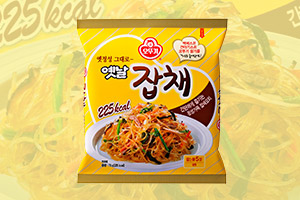

(주) 오뚜기
- 오뚜기 소개
- (주)오뚜기 임직원은 식품을 통해 인류의 건강과 행복을 추구하고 있습니다.
최고의 맛을 향한 열정
오뚜기 전 임직원들은 '보다 좋은 품질, 보다 높은 영양, 보다 앞선 식품'으로 인류 식생활 향상에 이바지하기 위해 맡은 바 업무에 최선을 다하고 있습니다.
영업, 생산, 연구, 관리 등 모든 부서에서 스스로에게 주어진 업무를 빈틈없이 처리하고 있는 것은 물론 밝고 명랑한 직장 분위기를 만들기 위해 노력하고 있습니다.
이러한 오뚜기의 노력들이 바로 최고 품질, 최고의 맛으로 승화되는 것입니다.
-


- 
- 2018.04
- 춘천막국수 130g
- 오뚜기밥 고시히카리210g,슈퍼곡물 플러스210g
- 검은콩으로만든 생낫또 153g
- 딤섬 샤오롱바오 168g,딤섬 새우 샤오롱바오 168g,딤섬 불오징어 샤오롱바오 168g
- 냉장 강된장 양념 115g
- 냉장 마파두부양념 130g
- 요리용 꿀 400g
- 2018.03
- 옛날 닭 곰탕 500g
- 굴 진짬뽕 용기 110g
- 이금기농축치킨스톡 (272g, 1.25kg)
- 옛날 들깨 감자탕 600g
- 상온 고시히카리 쌀죽 295g, 연어죽 285g
- 벨라티 블렌딩 침출차 4종
- (청음10T-도라지,맥문동,생강/평온10T-캐모마일,건조사과,로즈페탈,루이보스/활력10T -로즈힙,오렌지필,히비스커스,다즐링/유연10T -카카오닙스,카카오허스크,다즐링,페퍼민트)
- 벨라티 블렌딩 액상차 2종
- 허니 레몬블랙티(레몬,꿀,홍차) /허니 자몽 블랙티(자몽,꿀,홍차)
- 진짜쫄면 150g
- 2018.02
- 초간편 김치전믹스 320g
- 바사삭 야끼교자 258g, 잡채교자258g
- 맛있는 오뚜기 컵밥 전주식 돌솥비빔밥 233g, 김치찌개밥280g,
- 참치마요덮밥 217g, 붉닭마요덮밥 267g, 참치와사비마요덮밥 217g
- 한번에먹는 교자만두200g, 잡채만두200g, 김치만두200g
- 크루통 컵스프 버섯크림 컵 27g
- 2018.01
- 완도산 자연건조미역 80g , 70g
- 크루통 컵스프 콘크림 컵 27g , 갈릭크림 컵 27g
- 오감포차 매콤 아구찜 235g, 쭈꾸미볶음180g, 매콤닭근위볶음 150g
- 옛날 구수한 끓여먹는 보리누룽지 240g
- 아몬드,호두 율무차 (18g, 15T, 50T, 100T)
- 알뜰미역 (500g, 1kg)
- 이금기 간편중식소스 3종
- (몽골리안비프소스80g, 레몬치킨소스80g, 허니갈릭폭립소스70g)
- 초간편 감자전믹스 200g
- 2017.12
- 밥친구 치즈 24g (8g * 3개)
- 팥 칼국수 120g
- 2017.11
- 소스듬뿍 찹쌀탕수육500g, 통등심돈까스440g
- 렌지용 새콤달콤 탕수완자180g, 매콤칠리 햄버그스테이크 180g
- 포테이토 피자 그라탕180g,스위트포테이토 김치 그라탕180g,
- 크림소스미트볼 그라탕180g 굴 진짬뽕 130g
- 매콤 컵닭강정150g, 찹쌀 컵 탕수육160g
- 딤섬 불고기 슈마이 135g
- 2017.10
- 소시지야채볶음 200g
- 슈레드치즈 모짜렐라 70g * 3개
- 떠먹는 컵피자 4종 150g (콤비네이션,트리플햄,매운치킨,포테이토)
- 특육개장 500g
- 와사비마요네스 525g
- 컵누들 베트남 쌀국수 매콤한맛49.4g, 86g
- 허브맛솔트 2종 55g (로즈마리&오레가노,강황)
- 크루통 컵스프 4종 24g *3개 (콘크림,버섯크림,갈릭크림,포테이토크림)
- 2017.09
- 초간편 감자전 믹스, 콩전 믹스200g
- 프레스코 칠리미트 스파게티소스 400g
- 리얼치즈라면 멀티 (135*4), (135*5)
- 3분 3일 숙성카레 순한맛 200g , 약간매운맛 200g
- 한번에 먹는 동그랑땡 200g, 갈비산적 200g, 해물완자 200g
- 간편컵국 미역국9.5G, 북어국10.5G, 사골우거지국10G, 버섯해장국9G, 닭곰탕10G
- 앙금상큼푸딩 자몽 95G, 오렌지 95G, 블루베리 95G, 파인애플 95G
- 컵누들 팟타이쌀국수 50gX6입 , 컵누들 마라볶음쌀국수 48gX6입
- 다시마 스낵 오리지널, 치즈 5G
- 맛있는 오뚜기 컵밥 톡톡 김치알밥 192g, 차돌 강된장보리밥 280g
- 컵누들 베트남쌀국수 용기 88.5g, 매콤한맛 용기 86g, 팟타이쌀국수 용기 84.5g
- 리얼치즈라면 용기 120g
- 2017.08
- 유자흑초 초고추장 300g, 500g
- 맛있는 치킨카레 치즈볶음밥 450g, 230g(용기)
- 맛있는 베이컨 치즈볶음밥 450g, 230g(용기)
- 맛있는 참치김치 치즈볶음밥 450g, 230g(용기)
- 맛있는 쌀 떡볶이 424g, 국물떡볶이424g, 라볶이434g
- 간편 교자만두 116g
- 2017.07
- 옛날 김자반 25g, 50g
- 진한 멸치육수로 맛을 낸 떡볶이소스 180g
- 간편 버섯해장국 9g*5개, 사골우거지국 10g*5개, 닭곰탕 10g*5개
- 리얼요거트푸딩 블루베리90g 딸기90g
- 2017.06
- 맛있는 오뚜기컵밥 뚝배기불고기밥 290g, 쇠고기전골밥 290g
- 오감포차 직화무뼈닭발150g, 직화오돌뼈150g, 닭근위마늘볶음150g
- 오리지널 밀크티 18g*10포
- 우렁된장국, 사골우거지국 300g,500g
- 돼지고기 김치찌개 280g,480g
- 3일 숙성카레 분말 순한맛80g, 약간매운맛100g
- 3일 숙성카레 고형 순한맛100g, 약간매운맛100g,200g
- 2017.06
- 콩국수라면 135g
- 2017.05
- 간장찜닭양념180g, 닭볶음탕양념160g, 오리지널 밀크티 18g
- 쇠고기미역국, 쇠고기무국 300g
- 맛있는 피자소스 175g
- 깔끔하게 매콤한 와사비소스 250g, 냉장 정통 밀또띠아 240g 쌀또띠아 240g, 삼겹살 양파절임 소스 275g
- 우렁된장국 300g
- 2017.04
- 냉동 고구마김치 그라탕 210g
- 요리 꿀 배청 680g, 요리 생강청 680g, 컬러페퍼소스 60g, 밥친구 김자반 33.3g
- 2017.03
- 바삭한 갈비 군만두 300g, 400g*2, 1,000g
- 함흥비빔면 135g
- 2017.02
- 현미로 만든 흑초, 사과를 담은 흑초, 파인애플을 담은 흑초 500ml, 900ml
- 냉장 옛날 간장찜닭,닭볶음탕 200g
- 2017.01
- 이탈리아 번들 스파게티 500g
- 맛있는오뚜기컵밥 쇠고기미역국밥172g,북어해장국밥175g,사골곰탕국밥171g
- 오뚜기죽 계란야채죽285g,영양닭죽285g
- 순토마토퓨레 420g
- 2016.12
- 오뚜기 슈레드치즈 2종
- 2016.10
- 오뚜기 우엉차 40g, 100g, 유기농 토마토 케ひ
- 2016.09
- 오징어낙지볶음양념 120g, 고등어갈치조림양념 120g
- 오뚜기 베이킹소다 400g
- 맛있는 오뚜기컵밥 6종(김치참치/제육/춘천닭갈비/매콤낙지/오삼불고기/햄버그)
- 2016.08
- 컵누들 베트남 쌀국수 47g, 컵누들 얌꿍쌀국수 44g
- 옛날 왕교자(468g/648g/936g), 옛날 잡채 왕교자(468g/648g/936g)
- 맛있는 허니망고카레 고형 240g, 맛있는 버터치킨카레 고형 240g
- 부대찌개라면 130g
- 냉동 직화고기산적 480g
- 냉동 사각피자 4종(치즈/불고기/고르곤졸라/호두&아몬드)
- 냉장 맛있는 순두부찌개양념 115g, 두부찌개양념 140g
- 2016.07
- 냉동 건강한집밥 돌솥비빔밥, 우렁강된장비빔밥(봉지/용기)
- 정통 오리엔탈 드레싱 210g, 양송이 스테이크소스 270g
- 볶음진짬뽕(봉지) 125g
- 겨자냉채소스 250g
- 2016.06
- 냉장 맛있는 국밥 3종(쇠고기미역국, 쇠고기무국, 사골북어국)
- 맛있는 오뚜기밥 가바백미 210g
- 유부우동 용기 100g
- 2016.05
- 오뚜기죽 5종(전복죽, 새송이쇠고기죽, 참치죽, 통단팥죽, 단호박죽) 285g
- 냉장 야채 담은 드레싱 3종(20가지 야채, 블루베리, 파인애플)
- 냉장 스윗 콘드레싱
- 볶음 진짬뽕 110g
- 냉동 오뚜기피자 4종(불고기, 콤비네이션, 고르곤졸라, 호두&아몬드)
- 2016.04
- 향이 생생한 직접 갈아먹는 통후추 50g
- 홀스래디쉬 250g
- 옛날 녹두당면 300g
- Mini 딸기쨈, 블루베리쨈 15g X 10
- 2016.03
- 냉동 떡 만두국 212g
- 맛있는 허니망고 카레 (분말, 100g ) 맛있는 버터치킨 카레 (분말, 100g )
- 2016.02
- 진짬뽕 미니컵 75g
- 2016.01
- 오뚜기 햄 (200g, 240g)
- 냉장 고구마스프 200g * 3
- 3분 인도카레마크니 200g, 3분 태국카레소스 그린 200g
- 유부우동컵 65g
- 2015.04
- 가바백미
- 2015.02
- 매운 갈비찜 180g
- 돼지고기 김치찜 180g
- 끓여먹는 누룽지 240g (4인분)
- 2015.01
- 8년 숙성 흑초 600ml
- 뿌셔뿌셔 아카시아맛 90g
- 2014.12
- 뿌셔뿌셔 칠리치즈맛 90gl
- 달콤한 쵸코시럽 330gl
- 달콤한 딸기시럽 325g l
- 2014.11
- 나폴리탄 스파게티소스 280g
- 2014.10
- 해물야채맛 생라멘 282g
- 파스타스프 트리플치즈 30g
- 파스타스프 양송이크림 30g
- 파스타스프 브로콜리치즈 30g
- 뚝불우동 655g
- 2014.09
- B-콤플렉스 플러스 비오틴 120정, 300정
- 오메가-3 1000 100캡슐
- 비비게따 토마토 스파게티소스80g
- 비비게따 알리오올리오 스파게티소스 60g
- 비비게따 까르보나라 스파게티소스 80g
- 비비게따 갈릭할라페뇨 스파게티소스 60g
- 백세강황환 규격추가 360환
- 메가 비타민C 1000 70정, 200정
- 멀티비타민&미네랄 220정
- 네이처메이드 신제품 4종
- 2014.08
- 맛있는 콩비지찌개 500g, 250g
- 2014.07
- 홍삼아이튼튼 플러스진 600ml
- 원기 홍삼진1000ml
- 열떡볶이면 140g
- 강황 48g
- 2014.06
- 콘크림스프 200*3
- 냉장 양송이스프,브로콜리스프, 7가지 국산재료 매콤한평양물냉면 3인
- 7가지 국산재료 김장동치미 평양물냉면 3인
- 2014.05
- 진생업 3종 고려홍삼농축액진 240g
- 맛있는 오뚜기밥 오곡 210g
- 3분 렌틸카레 200g
- 3분 렌틸짜장 200g
- 2014.04
- 카레라면 110g
- 참깨드레싱 195g
- 간편요리초 500ml, 900ml
- 2014.03
- 자몽 젤리드레싱 270g
- 열대과일 젤리드레싱 270g
- 2014.02
- 고등어 김치&무 조림 280g
- 2014.01
- 육개장 밥 350g
- 사천짜장밥 340g
- 김치제육덮밥 340g
- 2013.12
- FreshValley 우리쌀 떡국떡 600g
- 2013.11
- Snowvalley 등심돈까스 500g
- Snowvalley 너비아니 600g
- 홀그레인 머스타드 소스 280g
- 아이스샤베트 6종 65ml
- 감자떡 군만두 500g, 1,000g
- 2013.10
- 옛날 매운잡채 (봉지73g, 용기75.5g)
- 2013.09
- 힐링타임 핫초코 20g * 10포
- 2013.08
- 참치간장 500ml
- 뚝딱참치 2종 100g, 150g (뚝딱참치 열, 뚝딱참치 데리야끼)
- 국산 참기름 250g
- 국산 들기름 250g
- 2013.07
- 참깨 비빔장
- 윈제니아 3종 225g (프리미엄밀크,화이트,다크)
- 옛날 잡채- 용기
- 렌지용 미트류 6종 180g (햄버그스테이크,미트볼,데리야끼치킨,스위트칠리치킨,닭강정,라조기)
- 데리야끼 소스
- 2013.06
- 오뚜기 옛날 프리미엄 분말죽3종 (사골쇠고기죽, 영양삼계죽, 얼큰북어죽)
- 2013.05
- Snow Vally 해물완자
- 아이스티 5종 (유자맛,복숭아맛,매실맛,복분자맛,석류맛)
- 간편미역냉국
- 2013.04
- 요리 매실청
- 옛날 잡채밥
- 2013.03
- 후르츠칵테일
- 파인애플
- 옛날 잡채
- 스위트 칠리소스
- 2013.02
- UCC 커피 7종 (골드스페셜 리치블랜드, 클리어 블랜드(원두),UCC 오리지널,모카,킬로만자로 블랜드(진공팩)UCC 더블렌드114,11스틱)
- 반찬통조림 사각캔 3종 (깻잎,검은콩조림,멸치볶음)
- 2012.12
- 홀그레인머스타드
- 프레스코 퀵스파게티
- 감자떡 김치만두
- 2012.10
- 푸딩믹스
- 클램크림파스타
- 2012.09
- SnowVally 수제 함박스테이크
- 할라피뇨 샌드위치 스프레드
- 프레스코 핑크크림
- 넛츠밸리 2종(꿀땅콩,커피땅콩)
- 감자떡 만두
- 2012.08
- 연생강
- 씻어나온 오뚜기쌀 가바현미
- 2012.07
- CURRY SAUCE 5종(갈릭,핫,데미,크림치즈,토마토)
- 참깨 라면 봉지면
- 오렌지 마말레이드
- 미니뿌셔 불고기맛, 바비큐맛
- 꿀매실차,꿀석류차,꿀복분자차
- 골드브라운 3분 햄버그 스테이크
- 2012.06
- 유자 마말레이드
- 뚝딱 참치 3종 (볶음장참치,김치&날치알참치,청양고추참치)
- 넛츠밸리 4종(새우아몬드,믹스넛,캐슈넛,피스타치오)
- 냉장면 3종 (콩국수,비빔국수,냉우동)
- 2012.05
- 후레시햄 2종
- 즉석국2종(애호박된장국,시골우거지국)
- 백세 발효강황 카레
- 꽁치 2종(한입꽁치,김치찌개)
- 5분쿠킹소스 5종(고추잡채,칠리새우,춘닭,제육,낙지)
- 2012.04
- 치킨카레밥
- 블루베리쨈
- 딸기쨈
- 고추짜장밥
- 2012.03
- 컵누들 5종 (매콤/우동/매운찜닭맛/새우탕/계란탕/잔치국수)
- 2012.01
- 오뚜기 고등어
- 옛날 참기름
- 2011.11
- Fresh valley 냉장마가린/버터
- 유자폰즈 소스
- 오뚜기 기스면
- 간사이 사누끼 우동
- 2011.10
- 오므라이스 3분소스 3종
- 옛날 참기름
- 2011.08
- 스노우밸리 참치군만두
- 쇼쿠닌노 코히 3종
- 맛있는 오뚜기밥 찰현미
- 2011.07
- 씻어나온 오뚜기 찹쌀
- 맛있는 몸에 좋은 미숫가루
- 골드브라운 하이스 3종
- 2011.06
- UCC 아로마 리치 2종
- 컵누들 신제품 3종
- 오뚜기쌀 경기 고시히카리
- 2011.05
- 스노우밸리 생얼음
- 스노우밸리 뉴질랜드 그린홍합
- 상큼한 유자흑초 초고추장
- 2011.04
- 직접 갈은 순메밀 물냉면
- 씻어나온 오뚜기 찰현미
- 스노우밸리 바비큐 폭립 3종
- 2011 시즌딸기쨈 누보
- 2011.03
- 후르츠밸리 번들쨈 3종 신제품 드레싱 4종
- 스위트앤젤 3종(밀감, 파인, 복숭아)
- 녹차, 단호박 핫케이크 믹스
- 2011.02
- 스노우밸리 바베큐 폭립 3종(오리지널, 핫칠리, 스위트)
- 2011.01
- UCC 골드스페셜 커피 3종
- 컵스프 3종(쇠고기, 양송이, 포테이토)
- 원조맛집 떡볶이소스 3종(매운맛, 토마토, 궁중떡볶이)
- 2010.11
- SnowValley 냉동 감자 6종
- 2010.10
- 2010 SEASON PACK 매실진액, 면사랑 우동 4종(가쓰오, 순 우리, 볶음, 돌냄비)
- 2010.09
- 오뚜기 누룽지칩 3종(짭짤한 맛, 달콤한 맛, 오곡),저산도 4.5 식초(사과/유자)
- 2010.08
- SnowValley 벨기에 와플,뷰티앤젤 석류/자몽/사과,액상형 드레싱 4종(흑초&양파, 흑초&마늘, 흑초&유자, 참깨 드레싱), 시즌팩 복분자쨈, 오디쨈 누보,원조맛집따라하기 볶음밥 소스 4종(감자탕맛, 샤브샤브맛, 춘천닭갈비맛, 해물떡찜맛)
- 2010.07
- 검은깨 참기름, 보들보들 치즈라면,옛날 우리밀국수
- 2010.06
- 닭고기 양념장 2종
- 2010.05
- 2010 SEASON PACK 딸기쨈
- 2010.04
- 프레스코 압착 올리브유 3종
- 요리용 쌀막걸리 식초
- 옛날 콩국수
-
- 2009.11
- 오뚜기 옛날국밥 4종
- 오뚜기 쌀핫케이크믹스, 쌀케이크믹스 2종
- 2009.01
- 오뚜기 옛날 약밥소스 세트
- 오뚜기 면사랑 얼큰한 옛날 우동
- 2009.09
- 매실식초
- 2009.08
- 디저트류
- 맛있는 김조림
- 2009.07
- 오뚜기 현미유
- 머스타드 마요네스
- 하프케챂
- 미니카레, 짜장
- 2009.06
- 견과류 3종
- 2009.05
- 옛날 약밥소스
- 옛날 김치
- 벌꿀
- 들기름
- 3분 바몬드 카레 4종
- 3분 매운덮밥소스 3종
- 3분 데리야끼 치킨, 3분 스위트칠리 치킨
- 2009.04
- 치즈볶이, 치즈볶이CUP
- 오믈렛(참치맛, 피자맛) , 깐계란, 깐메추리알
- 라면볶이CUP, 스파게티CUP, 짜장볶이CUP
- 계란구이, 계란지단, 계란고명
- 2009.03
- 냉장덮밥소스 3종
- 1회용 8개들이 제품(토마토케챂, 골드마요네스,허니머스타드, 딸기잼)
- 2009.02
- 씻어나온 맛있는 잡곡 4종
- 찹쌀호떡 믹스, 찹쌀미니도나스 믹스
- 2009.01
- 옛날 고춧가루
- 2008.12
- 직접 갈아먹는 볶음참깨
- 옛날 쌀국수
- 간편양념
- 2008.11
- 소포장카레(오뚜기카레,바몬드카레,백세카레)
- 3분 스파게티소스
- 3분 덮밥소스
- 2008.08
- 프리미엄 피시소스
- 삼선간짜장
- 3분 화천토마토카레
- 2008.06
- 마이스타일 계란미역죽, 북어죽, 쇠고기죽
- 넛츠핫케이크 가루
- 2008.05
- 현미, 흑미, 오곡누룽지
- 프리미엄 바몬드카레(고형)
- 2008.04
- 백세카레면(칼국수, 생우동)
- 2008.03
- 백세강황죽(야채, 쇠고기)
- 냉동슈마이
- 2008.01
- 카레군만두, 만두국만두(김치, 담백)
- 쌀올리고당
- 낫또된장국
- 강황만두피, 강황왕만두피
- 컵스프 3종(콘크림, 단호박크림, 브로콜리크림)
- 2007.12
- 맛있는 오뚜기 춘천닭갈비덮밥
- 맛있는 오뚜기 오삼불고기덮밥
- 2007.11
- 백세카레면 CUP
- 멸치얼큰우동
- 맛있는 오뚜기 강황밥
- 냉동미니찐빵
- 2007.10
- 컵누들 갈비탕
- 2007.09
- 컵누들 완탕
- 2007.08
- 냉장죽 4종 (전복죽,새송이쇠고기죽,단호박죽,단팥죽)
- 바다품은간장
- 2007.07
- 백세카레면
- 녹차소바
- 2007.05
- 올리고당
- 옛날 메밀국수, 옛날 강황국수
- 백세강황환
- 냉면육수 2종(흑초맛, 석류맛)
- 카놀라유
- 냉장콩국물, 냉장검은콩국물
- 2007.04
- 피클 3종(오이피클, 양파피클, 야채피클)
- 태양초 고추장 비빔 날씬누들)
- 유기농 냉장 드레싱 3종(프렌치드레싱, 블루베리드레싱, 샐러드드레싱)
- 2007.03
- 오뚜기 유기농 케찹
- 2007.02
- 우리콩으로 만든 김치생낫또
- 맛있는 오뚜기 햄버그덮밥
- 맛있는 오뚜기 팥밥
- 맛있는 오뚜기 단호박크림 리조또
- 2007.01
- 우리쌀 떡국떡
- 2006.12
- 삼포만두류 17종, 냉동면류 4종, 냉동렌지류 6종
- 2006.09
- 오뚜기 잡채
- 2006.07
- 컵곤약 3종(가쓰오우동맛, 녹차맛, 매콤한맛)
- 마시는 흑초 3종(석류, 오곡, 복분자)
- 그대로 마시는 흑초 3종(석류, 오곡, 복분자)
- 2006.06
- 유기농 딸기쨈
- 고급향신료 로즈마리, 너트멕
- 2006.04
- 오뚜기 맛있는 밥친구(카레, 치즈, 불고기)
- 수퍼 스위트콘
- 바삭하고 고소한 옛날김
- 2006.02
- 미소라면
- 100% 우리콩으로 만든 낫또
- 2006.01
- 냉장드레싱 6종
- 2005.12
- 오트밀 3종(넛트, 녹차, 오곡)
- 꽁치
- 2005.11
- 옛날 설렁탕, 옛날 도가니탕, 옛날 재첩국
- 맛있는 청국장찌개
- 맛있는 김치찌개, 맛있는 된장찌개
- 2005.09
- 카레밥, 짜장밥, 김치참치덮밥
- 올리브유 저지방 마아가린
- 카레밥, 짜장밥, 김치참치덮밥
- 2005.08
- 튀김우동
- 컵누들 김치, 컵누들 우동
- 오뚜기 맛있는 밥친구
- 오동통면
- 시찌미
- 라면볶이 봉지면
- 2005.07
- 올리브유 마요네스
- 녹차드레싱, 올리브유&갈릭드레싱
- 2005.05
- 참치 조미간장
- 참치 샐러드 4종
- 면사랑 메밀소바면
- 맛있는 계란
- 2005.04
- 참깨 돈까스 소스
- 2005.03
- 누룽지탕면(구수한맛, 매콤한맛) , 버섯과 야채 큰양념 4종 , 비빔면
- 2005.02
- 포도씨유 , 과일과 야채 케찹
- 2005.01
- 올리브참치 , 해물칼국수, 감자수제비
- 2004.12
- 비빔장 , 오뚜기 스파게티 , 컵누들, 컵누들 매콤한 맛 , 기스면, 김치소면 , 미니뿌셔 2종(감자맛, 옥수수맛)
- 2004.11
- 허니크림 드레싱 , 옛날 구수한 누룽지
- 짜장볶이 , 그대로 참치(불고기맛, 장조림맛, 고추맛)
- 맛있는 밥3종, 맛있는 덮밥4종, 맛있는 리조또 4종 (밥, 발아현미밥, 발아흑미밥, 낙지덮밥, 류산슬밥, 돈부리, 마파두부밥, 버섯리조또, 해물리조또, 김치리조또, 쇠고기야채리조또)
- 2004.10
- 씻어나온 맛있는 쌀 , 황다랑어 참치 , 퓨어 올리브유
- 2004.09
- 바삭하고 고소한 튀김가루, 부침가루
- 2004.07
- 버섯과 야채 양념장 4종 (소불고기 양념, 소갈비 양념, 돼지불고기 양념, 돼지갈비 양념)
- 2004.06
- 그대로 카레, 그대로 짜장
- 2004.05
- 흑초, 흑초콩 , 올리브 참치
- 용기죽 7종 (쇠고기죽, 버섯죽, 닭죽, 삼계죽, 전복죽, 단팥죽, 호박죽)
- 논콜마요
- 2004.04
- P세대라면 양념이 진짜라면으로 제품명 변경
- 황다랑어 참치, 불고기맛 참치, 토마토 참치
- 라면볶이, 스파게티컵 , 냉면사리, 냉면육수
- 고급향신료 10종 (강황, 정향, 바실, 타임, 통백후추, 통흑후추, 월계수잎, 오레가노, 파슬리, 순카레)
- 2004.03
- 냉장면 14종 (함흥비빔냉면, 강원도칡냉면, 해초물냉면, 쫄면, 멸치칼국수, 수타칼국수, 수타소면, 산둥간짜장, 사천짬뽕, 미트소스 스파게티, 퓨전핫스파게티, 사누끼우동, 사누끼유부우동) 김치cup, 열cup, 육개장cup , 생칼국수(해물맛)
- 2004.02
- P세대라면
- 2004.01
- 옛날 볶음검은깨
- 2003.12
- 흑임자죽 검은깨죽으로 제품명 변경
- 감자면 , 사골곰탕면(용기)
- 3분 스프 4종(크림, 쇠고기, 토마토야채, 옥수수)
- 3040란 , 백세카레, 3분 백세카레 , 혼합올리브유
- 2003.11
- 사골곰탕면 , 3분스튜 3종(비프, 콘크림, 야채)
- 2003.08
- 건더기가 풍부한 파스타 스프 3종(양송이, 브로콜리, 토마토)
- 2003.05
- 옛날녹차국수, 옛날계란국수
- 2003.04
- 흑임자죽
- 2003.03
- 국수와 장국(멸치맛, 비빔장, 바지락)
- 갈비탕 , 1/2 하프마요 , 홍화유, 해바라기유
- 2003.02
- 날씬쿠킹오일, 콜제로 식용유
- 2002.09
- 백세카레
- 2002.07
- 오뚜기 드레싱, 겨자맛 드레싱, 프렌치 드레싱, 샐러드소스
- 버섯김치전, 부추호박전 , 옛날 볶음참깨 , 고추맛 기름
- 2002.06
- 미스터리 참치
- 2002.05
- 옥수수유 , 겨자분, 와사비분
- 2002.04
- 사천짜장
- 2002.03
- 허니머스터드, 돈까스소스, 딸기잼
- 국수장국(가쓰오부시, 쇠고기, 멸치, 비빔국수)
- 3분 사천짜장
- 2002.01
- 진라면 컵(순한맛, 매운맛)
- 2001.12
- 유부 生우동 , 콩기름
- 매콤한 철판볶음면, 매콤한 철판볶음면 우동
- 2001.08
- 3분 참치죽, 야채죽 스탠딩 파우치 , 옛날 육개장
- 2001.07
- 철판볶음면(용기) , 철판볶음면 우동 , 북경반점 짬뽕
- 2001.06
- 철판볶음면 , 비냉
- 2001.05
- 현미식초 , 즉석국(시금치 된장국)
- 2001.04
- 닭도리탕 양념 , 야채 野 , 물냉
- 3분 오므라이스&미트소스, 3분 쿠킹마파소스, 3분 닭고기 짜장
- 2001.02
- 분말짜장 , 3분 바베큐치킨, 3분 탕수완자 , 힘라면
- 2000.12
- 생우동
- 2000.09
- 빨개면(쇠고기, 김치맛)용기
- 북경반점 짜장(용기)
- 2000.07
- 파스타에 소스 3종(크림, 토마토&야채, 떡볶이)
- 우동면 , 꽃게탕면(용기) , 전골면 , 빨개면
- 스파게티 소스 스탠딩 파우치(토마토, 피망&양파, 마늘&양파, 미트)
- 2000.06
- 스파게티 소스(미트)
- 2000.05
- 볶음밥 친구(새우맛)
- 2000.04
- 즉석국(북어미역국)
- 오뚜기 꽃게탕면 , 야채음료
- 야채음료 "야채가족100" 및 기념식 실시
- (야채가족, 토마토, 당근)
-
- 1999.11
- 김치우동 , 뿌셔뿌셔(쵸코, 메론, 딸기)
- 1999.10
- 크랜베리쥬스 , 꼬리곰탕
- 블루베리쨈 , 참숯불구이 갈비양념,갈비양념
- 1999.09
- 뿌셔뿌셔(떡뽁이, 스위트콘, 양념치킨, 바베큐맛)
- 1999.08
- 사과쨈, 복숭아쨈 , 오카레라면
- 1999.07
- 피자파티 , 볶음밥친구(쇠고기, 카레, 김치)
- 스파케티소스
- 뿌셔뿌셔(불고기맛, 피자맛)
- 레토르트4종(쇠고기죽, 버섯죽, 인삼죽, 잣죽)
- 스파케티소스
- 1999.06
- 애니타임 , 냉동생지
- 1999.05
- 열라면(용기), 진라면(용기)
- 1999.04
- 훼미리 카레, 훼미리짜장
- 인삼죽, 녹두죽 , 라면 사리
- 1999.03
- 허니머스타드소스
- 1999.02
- 렌지용 탕수완자, 난자완스
- 라이트 식물성 마아가린, 라이트 콘 마아가린, 샐러드소스 Non-oil
- 1998.09
- 옛날 김치 , 옛날 사골곰탕
- 레몬식초 , 오렌지마말레이드
- 1998.08
- 케이크시럽 , 분말스튜 2종(크림,비프)
- 렌지용 미트볼, 햄버그스테이크, 크림스튜, 비프스튜
- 1998.07
- 피자소스(튜브)
- 렌지용 마카로니 그라탕
- 3분 쇠고기 덮밥소스
- 렌지용 마카로니 그라탕
- 1998.06
- 올리브오일
- 1998.05
- 소용량 쨈 5종 (딸기, 후루츠, 사과, 복숭아, 블루베리)
- 로얄햄버그 짜장 , 3배 식초, 국수장국
- 1998.04
- 채식면
- 1998.03
- 배식초, 백포도식초 , 과일디저트 3종
- 1997.11
- 핫케익 가루 , 옛날구운소금
- 1997.10
- 콩기름
- 로얄비프스튜,크림스튜 , 해물짬뽕면
- 1997.08
- 호박스프,감자스프
- 1997.06
- 삐삐면 육개장
- 1997.05
- 하프마요 , 옛날 볶음 참깨
- 1997.03
- 김치라면 , 쇠고기라면
- 1997.02
- 짜장파티
- 1997.01
- 스위트콘라면
- 1996.11
- 비빔참치, DHA참치
- 1996.10
- 이금기소스 , 덩크슛, 새우탕(용기)
- 1996.08
- 열라면
- 1996.06
- 꽁치, 고등어, 골뱅이통조림
- 1996.04
- 메밀국수, 도토리비빔국수, 떡라면(얼큰한맛)
- 1996.03
- 삐삐면용기(햄, 쇠고기맛)
- 1996.01
- 옛날 고추장골드 , 조림양념
- 1995.11
- 옥수수유,참기름 , 돼지갈비양념
- 옛날쇠고기 우동
- 1995.10
- 조림참치,스위트콘참치
- 3분 후루츠카레, 3분 버섯덮밥소스
- 1995.08
- 콩기름
- 1995.07
- 초간편국 5종(김치, 된장, 미역, 계란, 북어)
- 먹는샘물 석천
- 1995.06
- 국수장국 , 핫짜장박사
- 1995.05
- 로얄카레, 로얄짜장, 불고기덮밥 소스
- 1995.04
- 옛날조청쌀엿 , 덩크슛 육개장(용기)
- 1995.03
- 한국형드레싱(오뚜기드레싱, 겨자맛, 프렌치)
- 1995.03
- 3분쇠고기카레, 야채카레, 치킨카레
- 1995.02
- 참치 , 참깨라면(용기)
- 1995.01
- 떡라면
- 1994.12
- 스낵면김치, 후레쉬참치(김치찌개용)
- 1994.11
- 오뚜기 참깨라면
- 1994.08
- 옛날마늘, 옛날생강
- 1994.06
- 옛날조청쌀엿 , 오뚜기 카놀라유
- 1994.05
- 파이쇼팅
- 1994.04
- 후레시참치 마일드
- 1994.03
- 튜브 초고추장
- 1994.02
- 후루츠쨈 , 포도쨈
- 오뚜기스파게티, 오뚜기 짜장면
- 딸기쨈, 오렌지마말레이드
- 덕용케찹(맛손산업)
- 오뚜기스파게티, 오뚜기 짜장면
- 1993.08
- 일회용돈까스 소스, 아일랜드 드레싱
- 아일랜드드레싱, 2배 현미식초
- 급식용 미트볼, 타타르소스
- 아일랜드드레싱, 2배 현미식초
- 1993.07
- 옥수수스프
- 1993.05
- 참기름 병, 캔 , 즉석북어국, 동태찌개
- 1993.05
- 도마도케찹, 골드마요네스, 아일랜드드레싱, 초고추장
- 1993.04
- 피자소스 , 옛날 멸치액젓
- 1993.03
- 즉석육개장(약간매운맛)
- 연겨자, 연와사비 , 즉석곰탕, 해장국
- 1993.02
- 3분 옥수수죽, 옥수수탕
- 3분 스탠딩 제품(카레약간매운맛, 짜장, 쇠고기간짜장, 하이스
- 2배 사과식초, 2배 양조식초
- 3분 스탠딩 제품(카레약간매운맛, 짜장, 쇠고기간짜장, 하이스
- 1993.01
- 즉석 사골우거지국
- 3분쇠고기 간짜장(평파우치)
- 1992.12
- 일회용 타바스코 페퍼소스
- 1992.11
- 옛날 다시마, 빵가루
- 1992.10
- 옛날물엿
- 1992.09
- 초고추장, 갈비양념, 돼지불고기양념, 불고기양념
- 즉석오징어섞어찌개, 김치찌개, 즉석미역국, 즉석육개장
- 오리온 아일랜드 소스
- 3분 단팥죽,호박죽
- 즉석오징어섞어찌개, 김치찌개, 즉석미역국, 즉석육개장
- 1992.08
- 옛날미역, 옛날국수
- 1992.07
- 스낵면 쇠고기맛
- 1992.06
- 피자헛용 1000아일랜드 드레싱, 하우스 드레싱
- 즉석육개장, 미역국, 배추된장국
- 곱빼기김치면, 육개장, 새우탕
- 즉석육개장, 미역국, 배추된장국
- 1992.05
- 식용유옥수수기름, 면실유
- 고산도 양조식초
- 1992.03
- 프리저브형 파인애플 쨈
- 1992.02
- 헌츠사 피자소스 , 수제당면
- 3분육개장(순한맛, 약간매운맛)
- 1991.12
- 옛날고추장 비닐
- 1991.10
- 1회용 연포식 케찹
- 1991.06
- 하이샌드 쇼팅
- 1991.05
- 스낵면 , 트로픽믹스 쨈
- 1991.05
- 불고기 양념, 돼지불고기 양념
- 1991.04
- 바몬드카레골드(순한맛,매운맛)
- 1991.03
- 1회용케찹
- 1991.01
- 통닭 양념소스(순한맛,매운맛) 업소용
- 베리쇼팅
- 백후추
- 베리쇼팅
- 1990.12
- 라면박사 골드(순한맛,매운맛)
- 1990.11
- 계란구이
- 1990.09
- 한덴시럽 , 포도쨈 , 후르츠쨈
- 1990.08
- 양조식초
- 1990.07
- 피자소스
- 1990.06
- 4번타자 김치면
- 1회용 1000아일랜드드레싱
- 1990.05
- 우스타소스(업소용)
- 옛날 물냉면, 옛날 비빔냉면
- 맥아물엿
- 옛날 물냉면, 옛날 비빔냉면
- 1990.04
- 옛날 국수 결속, 비결속(소면,중면,칼국수)
- 1990.02
- 통닭 양념소스(업소용)
- 라면박사(순한맛), 4번타자 육개장(순한맛)
- 떡국맛면
- 라면박사(순한맛), 4번타자 육개장(순한맛)
-
- 1989.12
- 옛날 녹두당면 , 옛날미역
- 1989.10
- 옛날고추장 병 , 후르츠쨈
- 1989.09
- 진곰탕면, 4번타자육개장
- 마아가린 디럭스, 프라임
- 델리케찹 듀크
- 과일시럽(복숭아,딸기,사과)
- 마아가린 디럭스, 프라임
- 1989.06
- 바몬드카레 골드 고형
- 1989.05
- 일미면(짜장,카레,스파케티)
- 옛날미역
- 바몬드카레 골드 분말
- 땅콩스프레드, 초코스프레드
- 옛날미역
- 1989.04
- 오렌지식초
- 1989.03
- 카레면 , 바몬드카레
- 1989.02
- 딸기쨈, 오렌지마말레이드
- 1988.12
- 마요네스골드
- 1988.10
- 미향
- 1988.09
- 복숭아쨈
- 1988.08
- 짜장박사 , 녹두빈대떡가루, 수제비가루
- 1988.06
- 마요네스
- 1988.04
- 4번타자 , 3분하이스카레 , 전장 김
- 1988.03
- 하이스카레 분말
- 하이스카레 고형
- 진라면(순한맛, 매운맛)
- 도마도케찹
- 1회용 케찹
- 하이스카레 고형
- 1988.02
- 사과쨈
- 1988.01
- 포도식초
- 참라면, 라면박사, 747라면(육개장맛)
- 모닝스프 4종(쇠고기,옥수수양송이,야채)
- 참라면, 라면박사, 747라면(육개장맛)
- 1987.08
- 후레시 마요네스 덕용 튜브 , 타바스코소스
- 부침가루 , 참기름
- 1987.07
- 바몬드카레 분말(순한맛,매운맛)
- 1987.06
- 고추장 비닐, PET용기
- 1987.05
- 군납용 마아가린
- 1987.01
- 새우죽
- 1986.09
- 헌츠케찹 , 찹쌀고추장 , 조미김
- 1986.07
- 옛날 당면 , 옥수수 스프 덕용
- 1986.05
- 도마도케찹(튜브)
- 1986.04
- 바몬드카레(야간매운맛) , 연겨자
- 마요네스골드(튜브)
- 1986.03
- 흑초
- 1986.02
- 델리케찹 튜브
- 1985.11
- 야채죽
- 1985.09
- 포도쨈
- 1985.08
- 프리저브형 딸기쨈 오렌지마말레이드
- 1985.07
- 현미식초
- 1985.02
- 컵 스프 쇠고기, 옥수수,크림, 야채
- 1985.01
- 대니스 마아가린 식물성,콘
- 1984.11
- 드레싱(1000아일랜드 드레싱, 후렌치 드레싱, 타타르소스)
- 1984.10
- 돈까스소스 , 스테이크소스 , 우스타소스
- 1984.09
- 사과식초 , 3분 밤 단팥죽, 3분 잣 단팥죽
- 1984.06
- 도마도 케찹튜브
- 1984.05
- 골드 마요네스(튜브), 참깨죽 땅콩죽
- 1984.04
- 러브마아가린(냉장용) , 골드 마요네스(병)
- 1983.10
- 미향
- 1983.06
- 3분 햄버그 , 3분 미트볼
- 1983.05
- 3분 고기덮밥
- 1983.02
- 화이트식초
- 1983.01
- 참기름
- 1982.10
- 마파두부
- 1982.02
- 3분 짜장
- 3분 스파게티소스
- 1981.10
- 3분 하이스
- 1981.04
- 3분카레
- 1980.11
- 액체쇼팅
- 1980.01
- 콘 마아가린
-
- 1978.07
- 고산도 식초
- 1977.12
- 순식물성 마아가린 (225g)
- 쇼팅(2Kg)
- 마아가린(300g)
- 쇼팅(2Kg)
- 1977.07
- 식초(160㎕)
- 1977.05
- 샤베트(오렌지,파인애플,딸기)
- 1976.10
- 인도카레 분말(100g)
- 1976.09
- 인도카레 고형(130g)
- 1976.05
- 사라다 드레싱(225g)
- 1976.01
- 풍쏘매 분말
- 1975.12
- 풍쏘매 고형
- 1975.11
- 오렌지쥬스
- 오렌지넥타
- 1975.10
- 도마도쥬스
- 1975.05
- 소고기 카레 분말(100g)
- 1975.04
- 소고기 카레 고형(110g)
- 1974.07
- 쇠고기스프(500g,1kg)
- 1974.06
- 순후추 캔포장(200g)
- 1974.04
- 순후추 캔포장(400g,100g)
- 순후추 비닐포장(400g)
- 1974.03
- 순후추 병포장(6g,12g)
- 1974.02
- 순후추 비닐포장(100g,200g)
- 1973.05
- 마요네스(450g)
- 도마도케찹 (3,500g)
- 고형카레 특제 6인분 (100g)
- 도마도케찹 (3,500g)
- 1972.12
- 양송이스프6인분 (80g)
- 닭고기스프6인분 (80g)
- 1972.10
- 쇠고기스프6인분 (80g)
- 1972.08
- 튀김파우더 (500,1kg)
- 고형하이스 6인분 (100g)
- 1972.07
- 도마도 퓨레
- 1972.06
- 마요네스 (225g)
- 1972.05
- 고형카레6인분(100g)
- 1971.10
- 핫케익분(950g)
- 핫도그 믹스파우더 (1kg)
- 도마도케찹(700g)
- 도나스가루(1kg)
- 핫도그 믹스파우더 (1kg)
- 1971.08
- 도마도케찹(365g)
- 1971.07
- 순카레분 은박포장(100g,200g)
- 1971.03
- 핫케익,도나스분(500g)
- 1970.06
- 산타 크림 스프 (75g)
- 1970.05
- 인스탄트 고형카레 8인분(140g)
- 1970.04
- 산타포타지스프(75g) 5인분
- 산타순카레(100g)
- 1969.12
- 순카레 British Pure Curry(50g)
- 1969.05
- 오뚜기즉석카레(100g)5인분